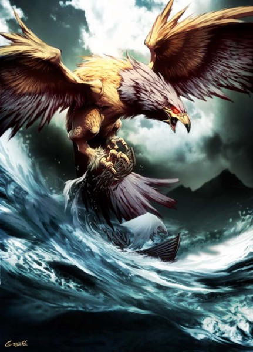

Анка (араб. عنقاء) — персонаж мусульманской мифологии, чудесные птицы, созданные Аллахом и враждебные людям. Считается что анка существуют и по сей день, но их численность настолько мала, что встретить их чрезвычайно трудно. Анка во многом сходны своими свойствами с птицей феникс, обитавшей в аравийской пустыне.
